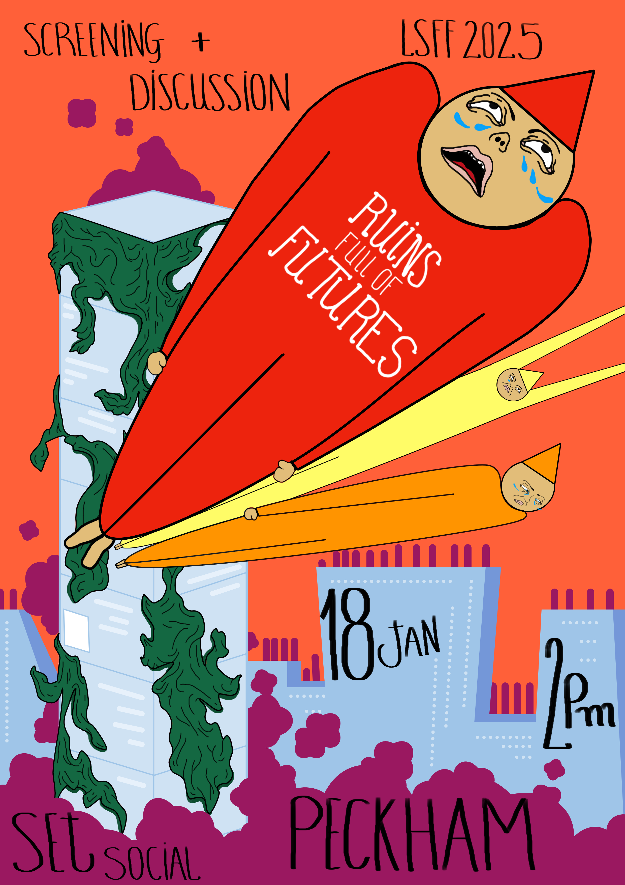

As part of LSFF 2025, I curated a sold-out screening at SET Social Peckham featuring five short films that differently represent the relationship between place-making, collective desire, and the ideas that shape the spaces we live, work and socialise in.
I facilitated an an open conversation with audiences and filmmakers after the screening where we discussed our experience of social, cultural and commercial spaces: the impressions they impart on us, the futures they foreclose on and the futures they make seem possible.
I also designed a promotional poster and wrote an accompanying text for the event.
